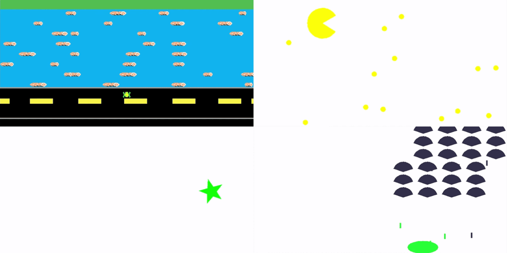
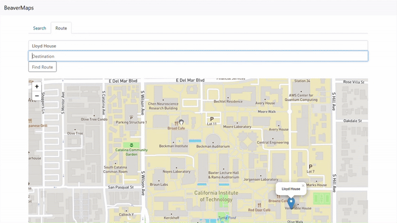

Wikipedia Movie Scroller
TikTok-style infinite scroll web app that fetches and displays random Wikipedia movie articles with API integration.
React, TypeScript, Vite, Tailwind CSS, Wikipedia API

Axe-throwing Video Game
Two-player axe throwing game with intelligent obstacles and custom C libraries for rendering, animation, input, and audio.
C, Git, Makefile, Emscripten, SDL2

Physics Engine
2D discrete physics engine with support for multi-object kinematics and collision detection, with demos including Space Invaders and Frogger.
C, Git, Makefile, Emscripten, SDL2

Light-Painting Robot Arm
3-DOF robot arm that light paints with LEDs in a vertical plane, using a Raspberry Pi Pico.
Hardware, embedded systems, robotics

Path Finder App
LA-area map app with real-time location search and route visualization using Dijkstra's algorithm, heaps, and hashmaps.
Java, JavaScript, HTML, CSS, OpenStreetMap